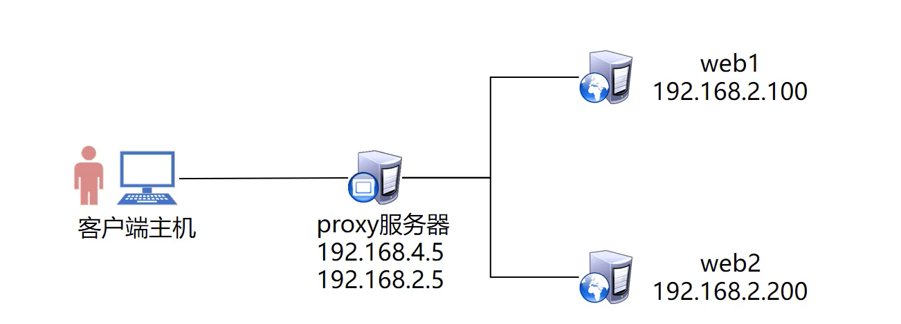
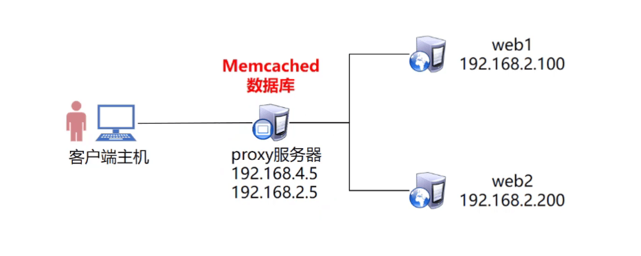

Nginx安装与升级 Nginx安装 Nginx简介
Nginx（”engine x”）
是俄罗斯人编写的十分轻量级的HTTP服务器
是一个高性能的HTTP和反向代理服务器，同时也是一个IMAP/POP3/SMTP代理服务器
官方网站：http://nginx.org/
Nginx安装 1 2 3 4 5 6 7 8 9 10 [root@nginx ~] [root@nginx ~] [root@nginx ~] [root@nginx ~] [root@nginx nginx-1.14.2] --prefix=/usr/local/nginx \ --user=nginx \ --group=nginx \ --with-http_ssl_module [root@nginx nginx-1.14.2]
Nginx配置文件及目录
/usr/local/nginx/ 安装目录
conf/nginx.conf 主配置文件
html 网页目录
logs 日志文件
sbin/nginx 启动脚本
启动Nginx服务 常用选项
-V：查看编译参数
-c：指定配置文件，启动服务
-t：测试配置文件语法是否错误
查看服务进程及端口信息 1 2 3 4 5 6 7 8 [root@nginx ~] root 3900 0.0 0.0 45924 1116 ? Ss 09:10 0:00 nginx: master process /usr/local/nginx/sbin/nginx nginx 3901 0.0 0.0 46372 1892 ? S 09:10 0:00 nginx: worker process root 15962 0.0 0.0 112704 972 pts/0 S+ 09:18 0:00 grep --color=auto nginx [root@nginx ~] tcp LISTEN 0 128 *:80 *:* users :(("nginx",pid=3901 ,fd=6 ),("nginx",pid=3900 ,fd=6 ))
清空防火墙、设置selinux 1 2 [root@nginx ~] [root@nginx ~]
升级Nginx 平滑升级Nginx服务
1 2 3 4 [root@nginx ~] [root@nginx ~] [root@nginx nginx-1.22.1] [root@nginx ~]
使用新版Nginx替换旧版Nginx 1 2 3 4 5 6 7 8 9 10 11 12 13 14 15 16 17 18 19 20 [root@nginx nginx-1.22.1] nginx version: nginx/1.14.2 built by gcc 4.8.5 20150623 (Red Hat 4.8.5-28) (GCC) built with OpenSSL 1.0.2k-fips 26 Jan 2017 TLS SNI support enabled configure arguments: --prefix=/usr/local/nginx --user=nginx --group=nginx --with-http_ssl_module [root@nginx nginx-1.22.1] [root@nginx nginx-1.22.1] [root@nginx nginx-1.22.1] [root@nginx nginx-1.22.1] nginx version: nginx/1.22.1 built by gcc 4.8.5 20150623 (Red Hat 4.8.5-28) (GCC) built with OpenSSL 1.0.2k-fips 26 Jan 2017 TLS SNI support enabled configure arguments: --with-http_ssl_module
Nginx基础配置 配置文件 配置文件结构
/usr/local/nginx/conf/nginx.conf
1 2 3 4 5 6 7 8 9 10 11 http { ······ server { ······ location / { ······ } } }
用户认证 1 2 3 4 5 6 7 8 9 10 11 12 13 14 15 16 17 18 19 20 21 22 23 24 25 server { listen 80; server_name localhost; auth_basic "auth-domain" ; auth_basic_user_file /usr/local/nginx/pass; } [root@nginx ~] [root@nginx ~] New password: 000000 Re-type new password: 000000 Adding password for user admin [root@nginx ~] New password: Re-type new password: Adding password for user wsq [root@nginx ~] admin:$apr1$2V1yB1nx$SzOINxqw7 /LH2LC8Hz94C0 wsq:$apr1$HxXLWbFQ$U53CJVGSl0 .yjyD.wzufW1
可以通过浏览器访问本机IP验证
重新加载配置
因为修改了配置文件，所以需要reload重新加载配置
虚拟主机 每一个server就是一台虚拟主机
基于域名的虚拟主机 1 2 3 4 5 6 7 8 9 10 11 server { listen 80; server_name web1.cn; ······ } server { listen 80; server_name web2.cn; ······ }
基于端口的虚拟主机 1 2 3 4 5 6 7 8 9 10 11 server { listen 8080; server_name web1.cn; ······ } server { listen 8000; server_name web2cn; ······ }
基于IP的虚拟主机 1 2 3 4 5 6 7 8 9 10 11 server { listen 192.168.1.10:80; server_name web1.cn; ······ } server { listen 192.168.1.10:81; server_name web2.cn; ······ }
客户端测试
HTTPS加密网址 密钥算法 常见密钥算法
对称加密
AES、DES
非对称加密
ESA、DSA
SSL虚拟主机 生成密钥
ssl加密网站的核心技术是非对称生成密钥
公钥、私钥、证书
1 2 3 4 5 6 7 8 9 10 11 12 13 14 15 16 17 18 19 20 21 22 23 24 25 26 [root@nginx conf] [root@nginx conf] Generating RSA private key, 2048 bit long modulus ......................................+++ ........................................................................................+++ e is 65537 (0x10001) [root@nginx conf] You are about to be asked to enter information that will be incorporated into your certificate request. What you are about to enter is what is called a Distinguished Name or a DN. There are quite a few fields but you can leave some blank For some fields there will be a default value, If you enter '.' , the field will be left blank. ----- Country Name (2 letter code) [XX]:ch State or Province Name (full name) []:hn Locality Name (eg, city) [Default City]:ny Organization Name (eg, company) [Default Company Ltd]:dz Organizational Unit Name (eg, section) []:dz Common Name (eg, your name or your server's hostname) []:wsq #姓名 Email Address []:123@123.com #电子邮件
SSL加密网站 1 2 3 4 5 6 7 8 9 10 11 12 13 14 15 [root@nginx ~] server { listen 443 ssl; server_name localhost; ssl_certificate cert.pem; ssl_certificate_key cert.key; location / { root html; index index.html index.htm; } } [root@nginx ~]
客户端测试 浏览器访问https://主机IP/测试
Nginx地址重写 地址重写
应用案例
web1.cn/a.html —> web.1.cn/b.html
1 2 3 4 5 6 7 server { listen 80; server_name web1.cn; rewrite "/a.html$" /b.html; ······ /a.html$ 以a.html结尾 [root@nginx ~]
1 2 3 4 5 6 7 server { listen 80; server_name web1.cn; rewrite ^/ http://www.tmooc.cn; ······ [root@nginx ~]
1 2 3 4 5 6 7 server { listen 80; server_name web1.cn; rewrite ^/(.*)$ http://www.tmooc.cn/$1 ; ······ (.*)$ 以任意个字符结尾 $1 引用 [root@nginx ~]
LNMP动态网站 LNMP Nginx+FastCGI+PHP-FPM
什么是LNMP 主流的企业网站平台之一
L：Linux操作系统
N：Nginx网站服务软件
M：MySQL、MariaDB数据库
P：网站开发语言（PHP、Perl、Python）
图片音频视频为静态数据
脚本为动态数据
部署LNMP 安装Nginx
1 2 3 4 5 6 7 8 9 10 [root@nginx ~] [root@nginx ~] [root@nginx ~] [root@nginx nginx-1.14.2] --prefix=/usr/local/nginx \ --user=nginx \ --group=nginx \ --with-http_ssl_module [root@nginx nginx-1.14.2]
安装MariaDB
安装PHP
php解释器、fastcgi接口、php连接数据库的扩展包
启动服务
1 2 3 4 5 6 7 8 9 [root@nginx ~] [root@nginx ~] [root@nginx ~] [root@nginx ~] [root@nginx ~] [root@nginx ~] [root@nginx ~]
配置动静分离 location语法
1 2 3 4 5 6 7 8 9 10 11 12 13 14 15 16 location /test { root html; index index.html index.htm; deny all; } location /video { root html; index index.html index.htm; allow 192.168.210.57; deny all; } location / { root html; index index.html index.htm; allow all; }
编辑nginx.conf 1 2 3 4 5 6 7 8 9 [root@nginx ~] location ~ \.php$ { root html; fastcgi_pass 127.0.0.1:9000; fastcgi_index index.php; include fastcgi.conf; }
编写测试脚本 1 2 3 4 5 6 [root@nginx ~] <?php $i =33;echo $i ;?>
客户端访问测试 浏览器访问主机IP/test.php
Wordpress案例 wordpress简介
上线WordPress 数据库操作
1 2 3 4 5 [root@nginx ~] MariaDB [(none)]> create database wordpress; MariaDB [(none)]> grant all on wordpress.* to wordpress@'%' identified by "000000" ; MariaDB [(none)]> grant all on wordpress.* to wordpress@'localhost' identified by "000000" ; MariaDB [(none)]> flush privileges;
上传代码到LNMP平台 1 2 3 4 5 6 7 8 9 10 11 12 [root@nginx ~] [root@nginx ~] [root@nginx ~] [root@nginx ~] location / { root html; index index.php index.html index.htm; } [root@nginx ~]
客户端测试 浏览器访问本机IP即可打开wordpress安装页面
Nginx七层代理 所谓七层负载均衡 ，也称为“内容交换”，也就是主要通过报文中的真正有意义的应用层内容，再加上负载均衡设备设置的服务器选择方式，决定最终选择的内部服务器，他走的是http协议 。
节点规划 
部署web服务 安装软件
1 2 3 4 5 6 7 8 9 10 11 12 [root@web1 ~] [root@web1 ~] [root@web1 ~] [root@web1 ~] [root@web1 ~] [root@web1 nginx-1.22.1] [root@web1 nginx-1.22.1] [root@web1 ~] [root@web1 ~] [root@web1 ~]
配置动静分离
1 2 3 4 5 6 7 8 9 [root@web1 ~] location ~ \.php$ { root html; fastcgi_pass 127.0.0.1:9000; fastcgi_index index.php; include fastcgi.conf; } [root@web1 ~]
编写测试页面 1 2 3 4 5 6 7 8 9 10 11 [root@web1 ~] <?php $i =11;echo $i ;?> [root@web2 ~] <?php $i =12;echo $i ;?>
部署代理服务器 安装软件 1 2 3 4 5 6 7 8 9 10 11 12 [root@proxy ~] [root@proxy ~] [root@proxy ~] [root@proxy ~] [root@proxy ~] [root@proxy nginx-1.22.1] [root@proxy nginx-1.22.1] [root@proxy ~] [root@proxy ~] [root@proxy ~]
Nginx代理语法 1 2 3 4 5 6 7 8 9 10 11 12 13 14 15 16 [root@proxy ~] http { upstream servers { server 192.168.1.11:80; server 192.168.1.12:80; } server { listen 80; server_name localhost; location / { proxy_pass http://servers; root html; index index.php index.html index.htm; } } [root@proxy ~]
客户端测试反复访问测试效果 1 http://192.168.1.10/test.php
配置upstarem集群池属性 1 2 3 4 5 6 7 8 9 10 [root@proxy ~] upstream servers { server 192.168.1.11 weight=1 max_fails=1 fail_timeout=30; server 192.168.1.12 weight=2 max_fails=2 fail_timeout=30; server 192.168.1.10 down }
wordpress代码数据迁移 配置NFS服务 1 2 3 4 5 6 7 8 9 10 11 12 13 14 [root@proxy ~] [root@proxy ~] [root@proxy ~] /wordpress *(rw) [root@proxy ~] [root@proxy ~] [root@proxy ~] Export list for proxy: /wordpress *
web服务器挂载共享存储
1 2 3 4 5 6 7 8 9 10 11 12 13 [root@web1 ~] [root@web1 ~] 192.168.1.10:/wordpress/ /usr/local/nginx/html/ nfs defualts,_netdev 0 0 [root@web1 ~] [root@web1 ~] server { listen 80; server_name localhost; location / { root html; index index.php index.html index.htm; }
客户端测试反复访问测试效果 Nginx四层代理 所谓四层负载均衡 ，也就是主要通过报文中的目标地址和端口，再加上负载均衡设备设置的服务器选择方式，决定最终选择的内部服务器，它一般走的是tcp，udp协议
模块
需要ngx_stream_core_module模块
使用–with-stream开启模块
安装stream模块 1 2 3 4 5 6 7 8 9 10 11 12 13 14 [root@web1 ~] [root@web1 ~] [root@web1 ~] [root@web1 ~] [root@web1 ~] [root@web1 nginx-1.22.1] --with-http_ssl_module \ --with-stream [root@web1 nginx-1.22.1] [root@web1 ~] [root@web1 ~] [root@web1 ~]
修改Nginx配置 1 2 3 4 5 6 7 8 9 10 11 12 13 14 15 16 [root@proxy ~] stream { upstream backend { server 192.168.1.11:22; server 192.168.1.12:22; } server { listen 12345; proxy_pass backend; } } http { ······ } [root@proxy ~]
客户端测试 使用Xshell等远程连接192.168.1.10:12345端口
Nginx优化 自定义错误页面 HTTP常见错误代码表
返回码
描述
200
一切正常
400
请求语法错误
401
访问被拒绝（账户或密码错误）
403
资源不可用，通常由于服务器上文件或目录的权限导致
403
禁止访问：如用户IP地址被拒绝，无法验证密码
404
无法找到指定位置的资源（Not Found）
414
请求URL头部太长
500
服务器内部错误
502
服务器作为网关或代理时，为了完成请求访问下一个服务器，但该服务器返回了非法的应答（Bad Gateway）
Nginx返回错误页面 1 2 3 4 5 6 7 [root@web1 ~] http { server { error_page 404 /40x.html; ······ } }
客户端访问一个不存在的页面测试 Nginx状态页面 安装status模块
with-http_stub_status_module 开启模块功能
可以查看Nginx连接数等信息
1 2 3 4 5 6 7 8 9 10 11 12 13 14 15 [root@web1 ~] [root@web1 ~] [root@web1 ~] [root@web1 ~] [root@web1 ~] [root@web1 nginx-1.22.1] --with-http_ssl_module \ --with-http_stub_status_module \ --with-stream [root@web1 nginx-1.22.1] [root@web1 ~] [root@web1 ~] [root@web1 ~]
激活status
1 2 3 4 5 6 [root@web1 ~] ······ location /status { stub_status on; } ······
客户端访问测试 1 http://192.168.1.10/status
状态信息
优化并发连接数 优化前
1 2 3 4 5 [root@web1 ~] [root@web1 ~] c 人数 n 总访问量 [root@web1 ~] socket: Too many open files (24)
优化Nginx配置
1 2 3 4 5 6 7 [root@web1 ~] worker_processes 4; events { worker_connections 50000; } [root@web1 ~]
修改linux内核参数
1 2 3 4 5 6 [root@web1 ~] [root@web1 ~] [root@web1 ~] * soft nofile 200000 * hard nofile 200000
优化后再做测试 日志切割 Nginx日志文件随着时间增长会越来越大
编写日志切割脚本
1 2 3 4 5 6 7 8 9 10 11 [root@web1 ~] date =`date +%Y%m%d`logpath=/usr/local/nginx/logs mv $logpath /access.log $logpath /access-$date .log mv $logpath /error.log $logpath /error-$date .log kill -USR1 $(cat $logpath /nginx.pid)[root@web1 ~] 03 03 * * 5 /usr/local/nginx/logbak.sh
开启gzip压缩 1 2 3 4 5 6 7 8 9 10 11 [root@web1 ~] http { ······ gzip on; gzip_min_length 1000; gzip_comp_level 4; gzip_types text/plain text/css application/json application/x-javascript text/xml application/xml application/xml+rss text/javascript; ······ } [root@web1 ~]
开启文件缓存
1 2 3 4 5 6 7 8 9 10 11 12 13 [root@web1 ~] http { ······ open_file_cache max=2000 inactive=20s; open_file_cache_valid 60s; open_file_cache_min_uses 5; open_file_cache_errors off; ······ } [root@web1 ~]
Session与Cookie Session与Cookie概述
Session共享
将Session保存到同一台共享服务器中共享给所有web服务器

Memcached概述
部署memecached 1 2 3 4 5 [root@proxy ~] [root@proxy ~] [root@proxy ~] [root@proxy ~]
查看配置文件 1 2 3 4 5 6 7 8 9 10 11 12 13 14 15 16 17 18 19 [root@proxy ~] PORT="11211" USER="memcached" MAXCONN="1024" CACHESIZE="64" OPTIONS="" [root@proxy ~] [Unit] Description=Memcached Before=httpd.service After=network.target [Service] Type=simple EnvironmentFile=-/etc/sysconfig/memcached ExecStart=/usr/bin/memcached -u $USER -p $PORT -m $CACHESIZE -c $MAXCONN $OPTIONS [Install] WantedBy=multi-user.target
安装PHP扩展
默认php是无法连接memcached数据库
需要安装扩展软件包，才可以让PHP连接memcached数据库
是给web主机安装扩展包
1 2 3 [root@web1 ~] [root@web2 ~]
修改PHP配置文件
修改2台web服务器，让PHP连接到192.168.1.10这台数据库服务器
实现Session共享到memecached数据库中
1 2 3 4 5 6 7 8 [root@web1 ~] php_value[session.save_handler] = files php_value[session.save_path] = /var/lib/php/session php_value[session.save_handler] = memcache php_value[session.save_path] = "tcp://192.168.1.10:11211" [root@web1 ~]
客户端访问测试